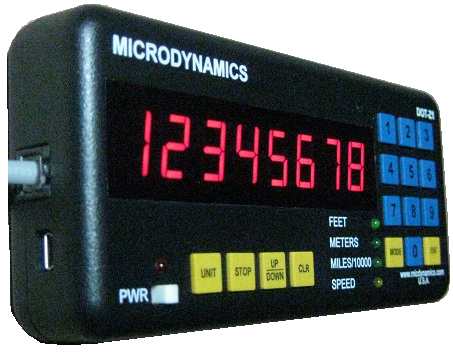

Distance Measuring Instruments

Our Distance Measuring Instruments (DMI) are vehicle-installed, electronic instruments that precisely measure distances ranging from 10s of feet to thousands of miles, with an accuracy of up to 0.5 feet per mile. They are easy to install, and easy to use, making surveying and other applications involving measuring distances much simpler, faster, and more accurate compared to using the conventional measuring wheel. Once installed, it can measure distances by simple button presses and traveling the desired course. They feature a menu-driven design and bright LED display in an attractive and sleek design that can be mounted on a dash-board or windshield. The DOT-Z1 line of instruments are one of the best in the industry. The DOT-Z1 Pro offers unparalleled features such as a high-performance GPS engine, easy portability and installation, requiring only connecting power through the 12V outlet -- no sensor-installation necessary!
| Product | Description | USB | Storage | GPS |
|---|---|---|---|---|
| DOT-Z1 Pro | Includes all features of the DOT-Z1 Standard (see below), and includes a high performance 66-channel GPS receiver. (Sensor-less, does not require connection to VSS!) | X | X | X |
| DOT-Z1 Standard | Includes all features of the DOT-Z1 Basic (see below), and includes a USB interface and event storage and marking features. (Requires wiring to vehicle's VSS) | X | X | |
| DOT-Z1 Basic | The most basic, simple, yet very powerful distance measuring instrument. Measures distance and speed in several types of units. Offers one-touch and menu-driven commands that make it one of the simplest DMIs to use. Offers features such as extremely accurate distance measurement, speed measurement, auto-calibration, distance pulse output capable, and can be customized further to meet specific requirements. (Requires wiring to vehicle's VSS) | X |